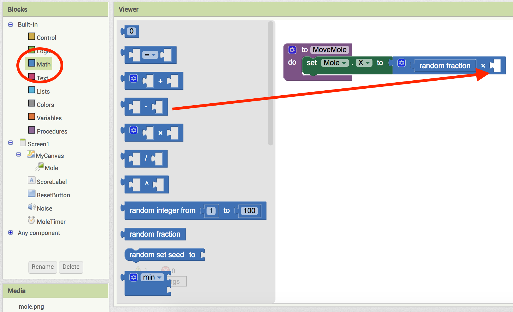
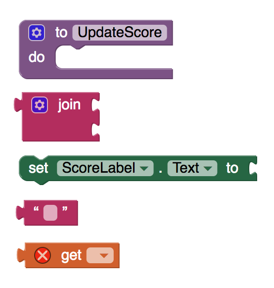

In this codelab, you'll create a game similar to Whack-a-Mole!
What you'll learn
- Use new components such as image sprites and the Clock component.
- Use procedures to simplify your code.
- Use new blocks such as random and text blocks.
From the Projects drop down menu, click Start a new project.
Create a new project called
MoleMash (no spaces).

Set the screen's Title to "MoleMash".
Download this picture of a mole and upload it in the Media panel.
You should be familiar with adding various components in the Designer View. Add the following to your app:
- A Canvas named "MyCanvas". This is the area where the mole moves. Set its dimensions to 300 pixels wide by 300 pixels high.
- A Label named "ScoreLabel" that shows the score, i.e., the number of times the player has hit the mole. Set the Text to "Score: ---".
- A Button named "ResetButton".
- A Sound component and name it "Noise". You'll use Noise to make the phone vibrate when the mole is hit.
Your app should look something like this:
In order to make the mole jump periodically, you'll need a timer. Add a Clock component and name it "MoleTimer"; this component will go into the non-visible components area. Set the TimeInterval property to 500 milliseconds, and make sure that TimerEnabled is checked.
To add the moving mole, we'll use a sprite. Sprites are images that can move on the screen within a Canvas. For MoleMash, our sprite won't move by itself; instead, you'll be setting the mole's position each time the timer fires.
From the Drawing and Animation drawer, drag a ImageSprite into your workspace, within the area of MyCanvas. Name this component "Mole", and set these properties for your sprite:
- Picture: Use mole.png, which you downloaded to your computer at the beginning of this tutorial.
- Enabled: checked
- Interval: 500 (The interval doesn't matter here, because the mole's speed is zero: it's not moving by itself.)
- Heading: 0 The heading doesn't matter here either, because the speed is 0.
- Speed: 0.0
- Visible: checked
- Width: Automatic
- Height: Automatic
Your user interface should look something like this:
Now it's time to code your app. To do that, we're going to need a new type of block: procedures. A procedure is a sequence of statements that you can refer to all at once as single command.
MoleMash requires 2 procedures. Go to Blocks View. Find the Procedures drawer under Built-In, and drag out a to procedure block. Change the label "procedure" to "MoveMole".
MoveMole is a procedure that moves the Mole sprite to a new random position on the Canvas. To do this, you will set the Mole's x and y positions to be a random fraction, between 0 and 1, of the difference between the size of the canvas and the size of the mole.
This is what the complete MoveMole procedure should look like:
First, from the Mole drawer, drag a set Mole.X to block into the procedure.
From the Math drawer, drag a multiplication block into the set Mole.X to block.
From the Math drawer, drag a random fraction block into the first multiplication plug.

From the Math drawer, drag a subtraction block into the second multiplication plug.
From the MyCanvas drawer, drag a MyCanvas.Width block into the first subtraction plug.
From the Mole drawer, drag a Mole.Width block into the second subtraction plug.
Challenges
- Finish the MoveMole procedure by adding blocks to change the position of the Mole's y position.
Our second prodecure will update the score of the game.
First, we need a variable to keep track of the score. Define a global variable named "score", and set the initial value to 0. This is what your block should look like:
Next, define a procedure named "UpdateScore". This procedure will change the text of the the label ScoreLabel to show the score of the game.
Challenges
- Try to code this procedure by yourself.
Hint: The completed UpdateScore procedure should look something like this:
The next step is to keep the mole moving. Every time MoleTimer goes off, the procedure MoveMole is called, meaning that the Mole has moved to a new, random position.
From the MoleTimer drawer, drag out a when MoleTimer.Timer block, and from the Procedures drawer, drag a call MoveMole block into the when MoleTimer.Timer block.
The program should increment the score each time the mole is touched. Sprites, like canvases, respond to touch events.
Every time the Mole is touched, your program will increment the score, call the UpdateScore prodecure to show the new score, make the phone vibrate for 100 milliseconds, and call the MoveMole procedure so the mole moves right away.
Challenges
- Try to code this procedure by yourself.
- Use typeblocking: typing to quickly create blocks.
Hint: The completed event handler should look something like this:
To create a value block containing 100, just type 100 and press return
To create a MoveMole block, just type MoveMole and select the block you want from the list
The last thing we need to do is reset the score every time the Reset button is pressed.
From the ResetButton drawer, drag a when ResetButton.Click block into the workspace. Place a set global score to block inside, and set the global score to 0. Next, update the score my placing a call UpdateScore block after the set global score to block.
Your complete MoleMash program should look like this:

You have made your first game using App Inventor.
What we've covered
- Use new components such as image sprites and the Clock component.
- Use procedures to simplify your code.
- Use new blocks such as random and text blocks.